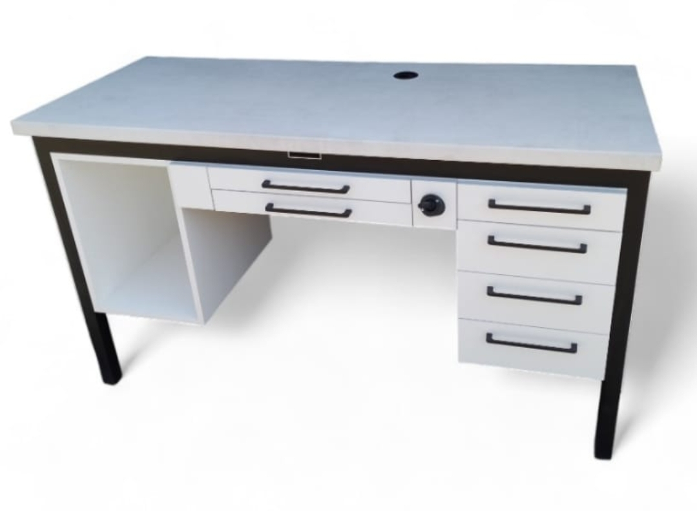
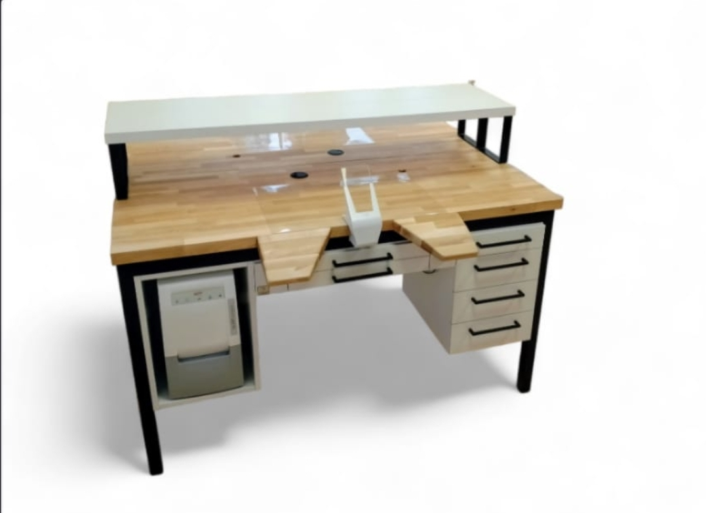
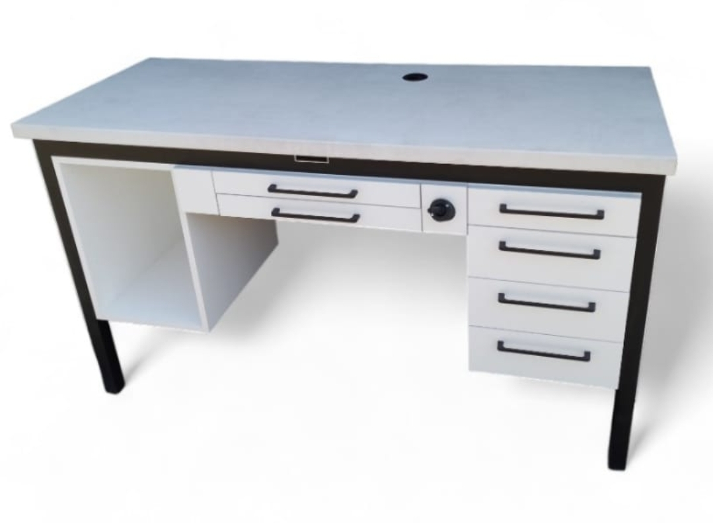
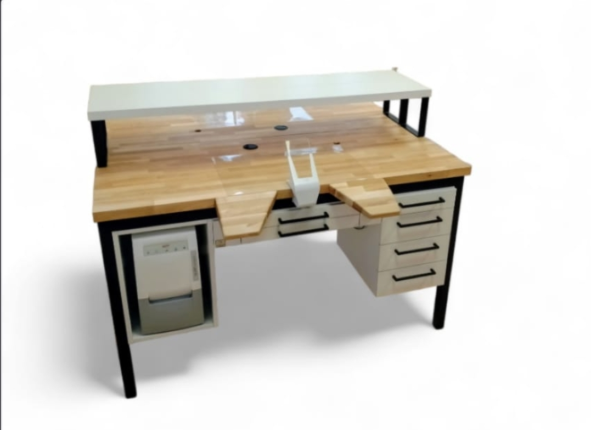

Nasza Oferta Mebli Protetycznych

Biurko ENS-pro jednostanowiskowe
Opis:Wyposażenie obejmuje instalację elektryczną z trzema gniazdami pod blatem oraz instalację powietrzną z dmuchawką. Zestaw zawiera także matę roboczą oraz prowadnice szuflad z funkcją cichego dotyku, a całość jest wykonana z konstrukcji aluminiowej. Opcje dodatkowe to możliwość instalacji gazowej, dodanie kobyłki (dwukrotnie), lampy oraz wyciągu pyłu. Istnieje również opcja zmiany koloru.
Cena netto: 4400 PLN
Wielkość: 150x60x89 cm
 




Biurko Protetyczne Kavo
Opis: Dwustanowiskowe biurko protetyczne Kavo. Istnieje możliwość zamontowania kompletnego wyciągu Kavo, podłokietników, lampy oraz innych elementów według uznania klienta. Więcej informacji można uzyskać pod numerem telefonu.
Cena netto: 4900 PLN
Wielkość: Brak opisu
Biurko Protetyczne v1
Opis:Biurko protetyczne wyposażone w instalację elektryczną i powietrzną. Biurko posiada również kanał z przyłączem na wąż odkurzacza, który pasuje do większości kobyłek, takich jak np. Zubler. Istnieje możliwość modyfikacji według indywidualnych potrzeb. Więcej informacji pod numerem telefonu.
Cena netto: 4300 PLN
Wielkość: 150x60x88-90 cm
Biurko ENS - eko
Opis: Urządzenie składa się z wytrzymałej konstrukcji aluminiowej, wyposażonej w praktyczne elementy instalacyjne. Zawiera instalację elektryczną z trzema gniazdami umieszczonymi pod blatem, instalację powietrzną z dmuchawką oraz matę roboczą, zapewniającą wygodę użytkowania. Szuflady zostały wyposażone w prowadnice z systemem cichego domykania. Opcjonalnie można zainstalować instalację gazową, dodatkową lampę, kobytkę oraz zmienić kolor urządzenia wedle preferencji użytkownika.
Cena netto: 4000 PLN
Wielkość: 110x60x89 cm
Biurko ANS - trzystanowiskowe
Opis:Biurko trzystanowiskowe to funkcjonalne rozwiązanie o wymiarach: szerokość x głębokość x wysokość, zaprojektowane z myślą o wygodzie pracy. Wyposażone jest w instalację elektryczną z trzema zestawami po trzy gniazda umieszczonymi pod blatem oraz instalację powietrzną z dmuchawkami. Posiada matę roboczą i prowadnice szuflad z mechanizmem cichego domyku. W ramach opcji dodatkowych dostępne są instalacja gazowa, kobylka (podpórka), lampa oraz możliwość zmiany koloru mebla.
Cena netto: 11500 PLN
Wielkość: Brak informacji